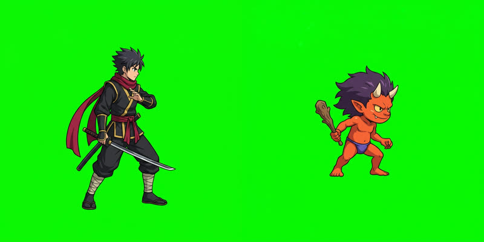
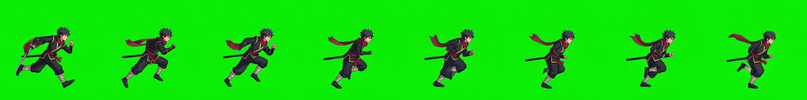
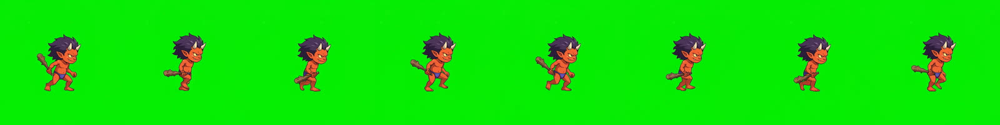
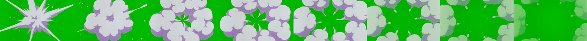
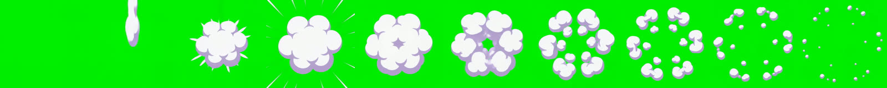
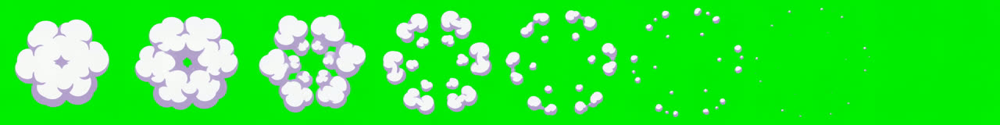
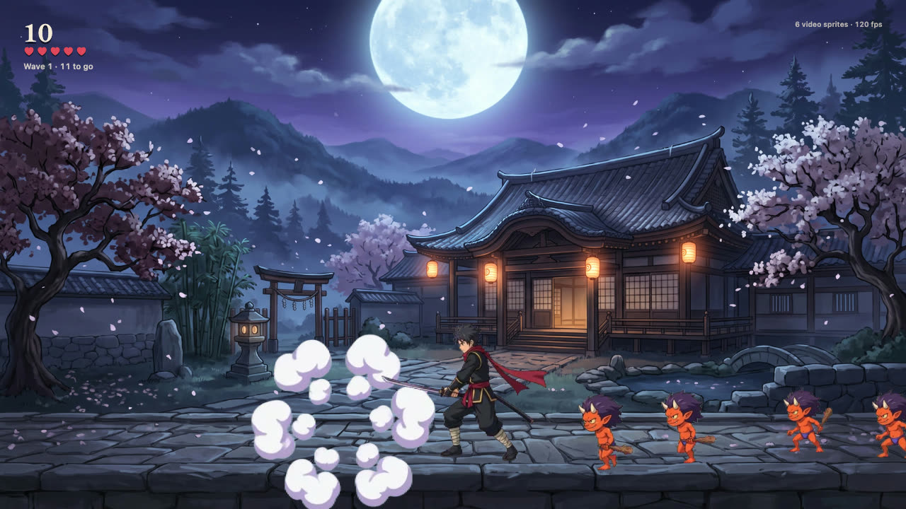
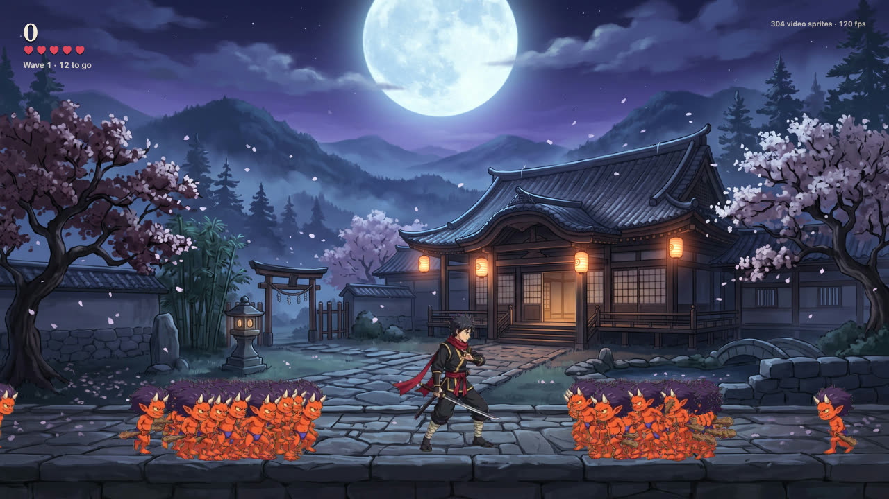

Plan around how the runtime works
Opal turns a transparent video into a small .opal file. At load time it decodes the file once with the browser's hardware video decoder and keeps the frames on the GPU. After that, each sprite is just a textured quad. A thousand enemies cost roughly the same as one, so the game is designed around a horde.
The asset list: a ninja hero (idle, run, attack), an oni imp (walk), a smoke burst for kills, and a background painting. Every animation is a short video, cut into seamless loops.
Generate the stills on pure green
Each character starts as one image from fal-ai/nano-banana-2. The prompt decides most of the final quality, so it's strict: exact side view facing right, character at about 55% of the frame height with wide margins, and a perfectly flat #00FF00 background with no green on the character.
2D side-scrolling action game character sprite, full body, seen from the exact side facing right.
A young ninja hero in a black gi with a crimson scarf and crimson sash, gold trim, holding a katana low…
The character is centered and occupies about 55% of the image height, with wide empty margins on all
sides (especially in front for the sword swing). The entire background is one perfectly flat, uniform
pure green chroma-key fill (#00FF00) with no gradient, no shadow, no ground line. No green anywhere on the character.
The background is the same model at 16:9, with a clear, empty stone floor in the bottom fifth for characters to stand on.
Animate with pinned loops
Each still goes into minimax/h3-max/image-to-video (about $0.03 a second). The key trick, borrowed from sprite-gen: pass the same still as both the first frame and the last frame. The model has to come back to the starting pose, so the clip loops without a visible jump.
{
"image_url": "hero.png",
"end_image_url": "hero.png", // pinned: the clip closes on itself
"duration": 2, "resolution": "768P", "prompt_expansion_mode": "disabled",
"prompt": "The ninja runs fast in place, as if on a treadmill, without moving across the screen …
Camera completely locked … background stays a perfectly flat, pure green chroma-key fill …
The last frame returns to the exact pose of the first frame, so the animation loops seamlessly."
}"In place, as if on a treadmill" and "camera completely locked" matter: without them the character drifts across the frame and you can't cut a loop.



Effects: the smoke that didn't fit
The first smoke was generated from text alone. It came back 16:9 and filled the frame, so the cloud was cut off by the edges of the video. In the game that shows up as hard, straight edges on something that should be round.

The fix uses the same pinning trick with a different image: an empty square green frame as both the first and last frame. That forces a square canvas and an effect that starts and ends empty. The prompt asks for a small, centred puff with no sparks or flying pieces.

Rather than keep paying for rerolls, the clip is cut where the automatic check (next step) says nothing touches the border. It starts on the full puff, and the game code does the pop-in (scale up over the first 10%).

Check every clip before using it
tools/sprite_qa.py catches the two problems you can't easily see in a still preview: content cut off at the frame edge, and loops that jump.
$ python3 tools/sprite_qa.py edges game/src/smoke.mp4
game/src/smoke.mp4: backdrop #00b400, 56 frames
FAIL: content touches the border in 48 frames (first 0, worst 30: 81.8% of the edge)
$ python3 tools/sprite_qa.py edges game/src/smoke_d_trim.mp4
game/src/smoke_d_trim.mp4: backdrop #00ec01, 38 frames
ok: nothing touches the border
$ python3 tools/sprite_qa.py loop game/src/imp_walk.mp4 --fps 12
whole clip seam cost 0.68 -> use @0-26 (drop the duplicated last frame)
best internal loop cost 1.45 -> @6-17 (12 frames)
pick: whole clipPinning paid off: in every character clip the first and last frames already matched better than any loop found inside the clip, so each clip is used whole.
Key, shrink and pack with the opal CLI
One command per character. --key auto finds the green from the frame border and removes it. For soft pixels (the sword trail, the smoke) it also works out how much of each pixel was backdrop and strips the green tint. --fps 12 --scale 0.5 brings 768p, 24 fps footage down to game size, which matters most for GPU memory.
opal encode -o hero.opal --crf 24 --fps 12 --scale 0.5 --once attack \
hero_idle.mp4 --key auto --rect idle=0,0,768,768@0-35 \
hero_run.mp4 --key auto --rect run=0,0,768,768@0-26 \
hero_attack.mp4 --key auto --rect attack=0,0,768,768@0-26| File | Clips | Size |
|---|---|---|
| hero.opal | idle 36f · run 27f · attack 27f | 658 KB |
| imp.opal | walk 27f | 89 KB |
| smoke.opal | burst 19f | 149 KB |
The encoder crops each clip to its visible area, packs the clips into one atlas, and stores the transparency as a grey image under the colour. It's plain H.264, so every browser can hardware-decode it.
Look at the result
Drop any .opal onto the player and it plays every clip through the real runtime. Use its light background to spot green fringes.

The game code
The runtime is about 15 KB (Rust compiled to WebAssembly, plus a little JS). These are the calls the game needs:
import { createOpal } from './opal.js';
const opal = await createOpal(canvas);
const hero = await opal.load('hero.opal', { scale: mobile ? 0.6 : 1 }); // phones: ~1/3 of the GPU memory
// stand on the ground: each clip knows its visible box inside the video frame
const [bx, by, bw, bh] = hero.clips.idle.box;
const k = 205 / bh; // on-screen height in px
const id = opal.spawn(hero, 'idle', x, y, k);
opal.set(id, x, y, k * facing); // facing = -1 mirrors the sprite
opal.play(hero, id, 'attack');
opal.speed(id, 3.2); // the generated slash is 2 s; play it in 0.7 s
if (opal.progress(id) > 0.06 && opal.progress(id) < 0.34) hitTest(); // the blade's sweep
opal.render(dt); // one draw call per fileThe rest is a normal small game: imps walk toward you from both sides, a slash kills everything in reach and leaves smoke, combos multiply the score, and every wave spawns faster.


Do it again with Claude Code
The whole process, with every lesson from this build, is written up as a Claude Code skill: .claude/skills/opal-video-sprites. It covers the prompt templates, pinned loops, the empty-frame method for effects, QA, encoding and the runtime calls. Open the repo in Claude Code and ask for a new character or effect.